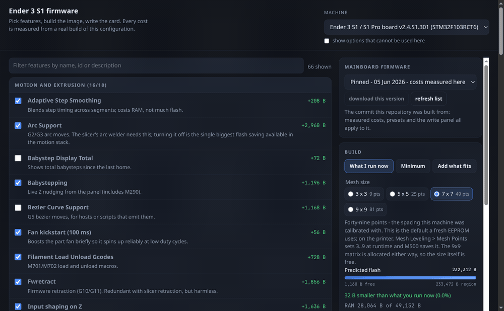

Ender 3 S1 firmware factory
Pick any upstream mriscoc checkpoint — release tag or branch, fetched on demand — tick features, and get a compiled, verified image plus a written SD card. Every feature cost was measured by compiling it on and off, so the size is predicted to the byte before anything runs. The reference build: 232,344 of 233,472 bytes, 1,128 bytes free.
What it is
28checkpoints: upstream tags, branches, and the pinned build
71 / 66catalogue features / with a measured byte cost
0 Bpredictor error on the reference build
< 1 minselection to verified image, log streaming
Build one now
No server compiles anything for you here: the build page describes a selection to GitHub Actions, which builds it, verifies the vector table and publishes the image as a release. Switch features off, request the build, download the file - no account needed for the download.
The configurator

What is in the repository
- A build service that fetches any upstream checkpoint, applies a selection, compiles, verifies the ARM vector table and writes both cards.
- The compiled reference firmware and display assets, with manifests and MD5s.
- The exact configuration that produced them, and every hand edit with
file:line. - A pinned, reproducible build chain and
make verify(checksums, ARM vector tables, configuration assertions, 162 documentation links, 14 live service checks). - A measurement harness that turned 66 features into byte costs, and a configurator that predicts, compiles, verifies and writes the card.
- The screen-recovery kit, including the evidence trail from the brick.